Visual prior art for the Inbox tab
Issue #8. 27 products looked at, 21 with screenshots. Tap any image for full size; swipe sideways inside a card when it has more than one. Directions are at the bottom. Full notes: visual-prior-art.md.
Agent and coding tools
T3 Code

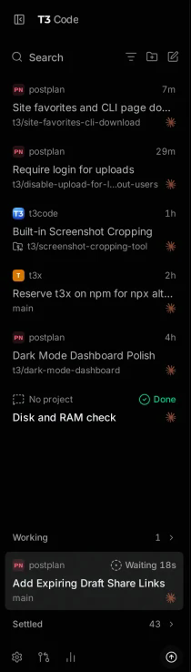


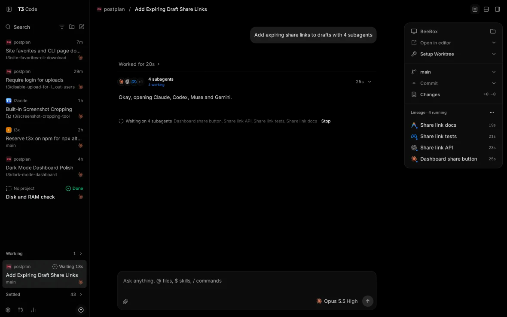
- At rest
- Project tag + age on top, title, branch underneath; a status pill (Done, Waiting 18s) only when one applies. Source read by a sibling (t3code @ 09a54f01): the base row is one line, 36px, time on the right (
apps/web/src/components/sidebar/SidebarThreadRow.tsx:1218-1330); the marketing shot shows a richer 3-line row. - On hover / open
- Hover swaps the time for row actions (same file). One pill per row, picked by priority (
apps/web/src/components/Sidebar.logic.ts:1091-1190). - Quieting
- Running and settled threads drop to 32px muted shelves pinned at the bottom:
Working 1 ›,Settled 43 ›(SidebarListMarkers.tsx:113). - Density (~800px)
- ~14 rows of the 3-line variant; ~22 of the 36px row (inferred).
- Falls short
- Rows are still a thread list, not a queue: nothing says what the thread wants from you beyond the pill.
Conductor

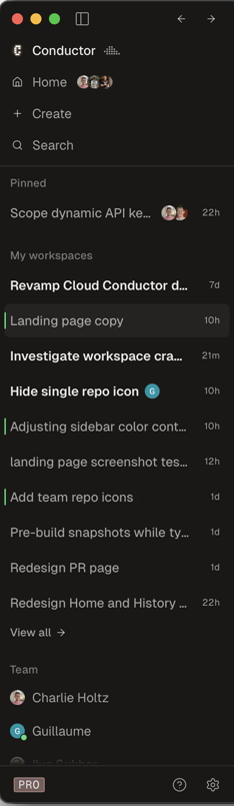


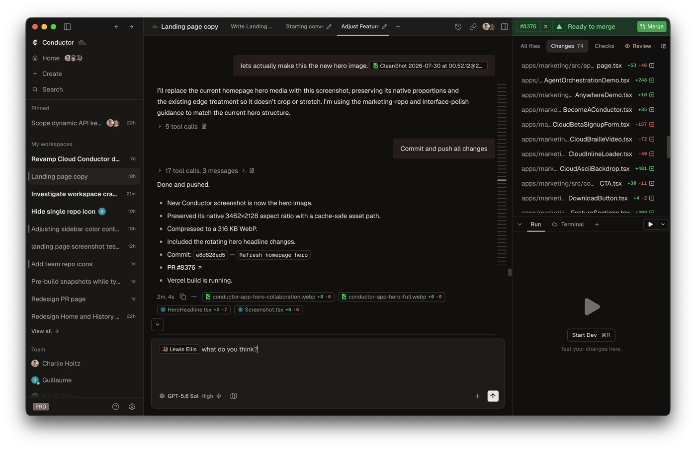
- At rest
- One line: title, collaborator avatars, age right-aligned. Bold title = unread (inferred); a thin green left rule marks some rows (meaning not stated on the page).
- On hover / open
- "Ready to merge" + Merge button and the changed-file list live in the open workspace's header, not the row.
- Quieting
- No running shelf; quiet by being monochrome.
View all →caps the list. - Density (~800px)
- ~26 rows.
- Falls short
- Row gives no hint of which workspace needs you; you have to open each.
Plannotator Inbox

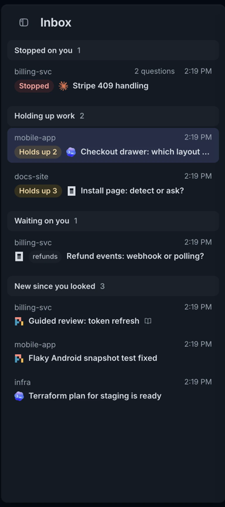


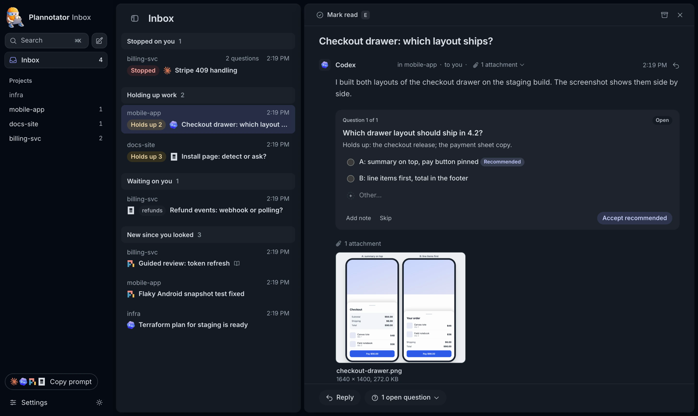
- At rest
- Section header per need with count (Stopped on you 1, Holding up work 2, Waiting on you 1, New since you looked 3). Row: project + time, then a colored chip (red Stopped, amber Holds up 2) + agent icon + title.
- On hover / open
- The question, options and attachment render in the reading pane;
Mark read Ein its toolbar. - Quieting
- "New since you looked" rows have no chip, so they read as lower priority without a separate tab.
- Density (~800px)
- ~15 rows.
- Falls short
- Needs a reading pane; at 280px the chip + title row truncates fast.
Vibe Kanban

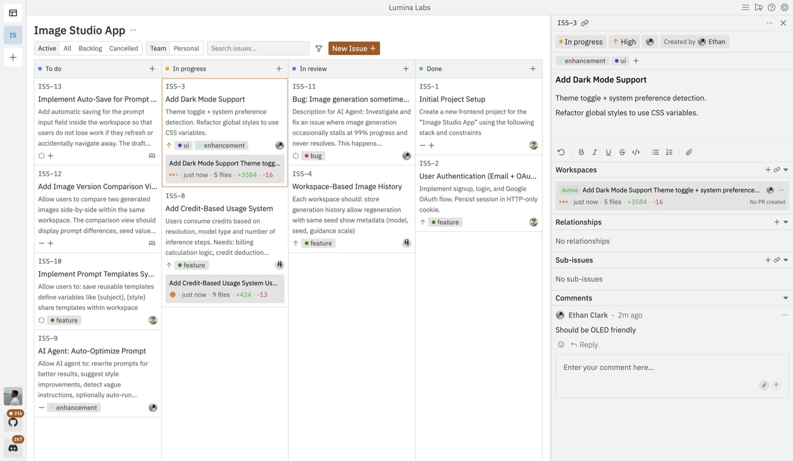


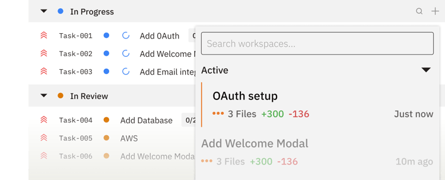

3 Files +300 -136) as compact evidence under a title.- At rest
- Kanban cards (To do / In progress / In review / Done). The attached workspace shows as a mini-row:
••• just now · 5 files +3584 -16. - On hover / open
- Workspace detail opens in a right panel with Active badge and "No PR created".
- Quieting
- Columns separate states; older workspace rows fade (popover).
- Density (~800px)
- Board, not a list; ~4 cards per column.
- Falls short
- A board does not fit a 280px sidebar at all.
Cursor (Agents view, 2.0)

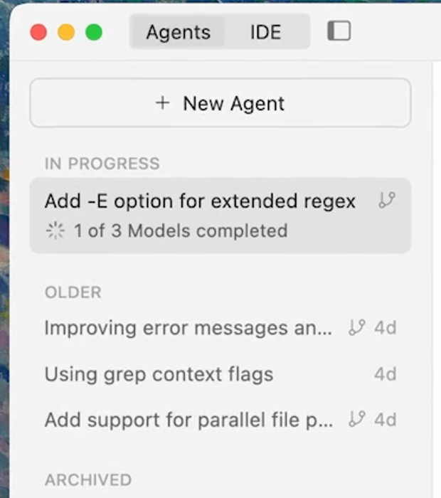


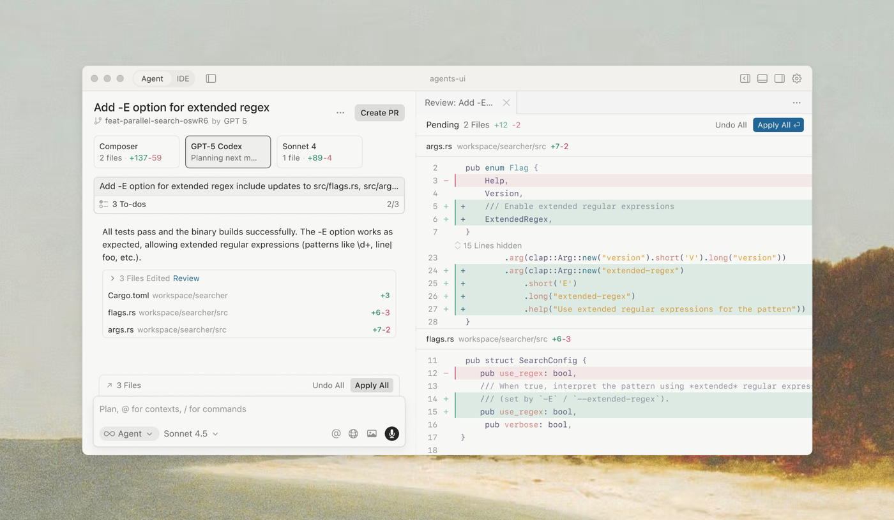
- At rest
- Three groups: IN PROGRESS, OLDER, ARCHIVED. In-progress row is a raised card with a second line
1 of 3 Models completedand spinner; older rows are one muted line with branch icon +4d. - On hover / open
- Per-model results (files, +/-), to-dos, and Review/Apply live in the open agent.
- Quieting
- Older work is gray text; archived collapses to a header.
- Density (~800px)
- ~12 rows.
- Falls short
- Nothing marks "needs you"; finished vs. waiting are both just "Older".
OpenAI Codex app

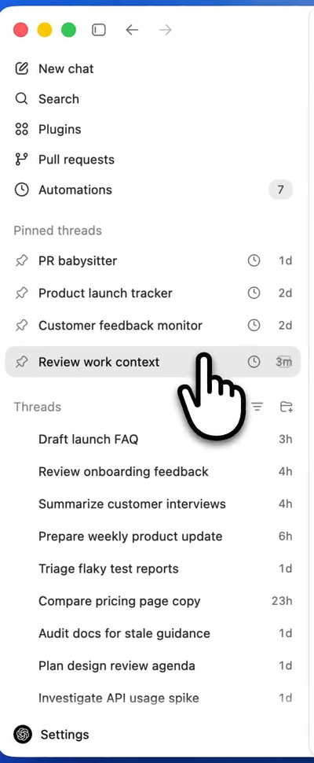

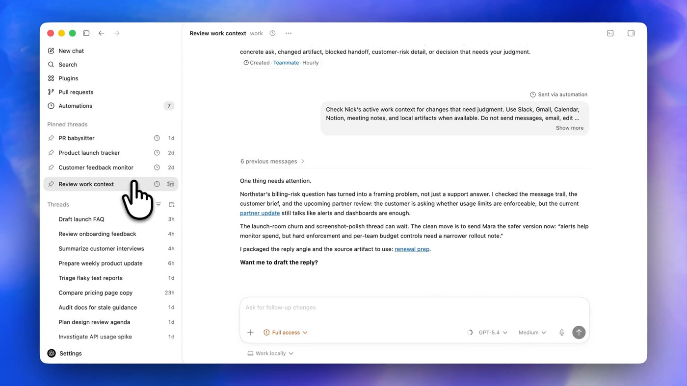
- At rest
- Nav (New chat, Search, Plugins, Pull requests, Automations 7), then Pinned threads with a schedule icon + age, then Threads: one line title + age.
- On hover / open
- Thread body says "One thing needs attention" — the attention lives inside the thread, not on the row.
- Quieting
- No color at all in the list. Ages are the only signal.
- Density (~800px)
- ~22 rows.
- Falls short
- Too calm for triage: no way to tell a blocked thread from a finished one without opening it.
Devin

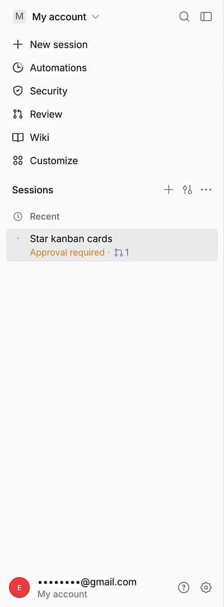

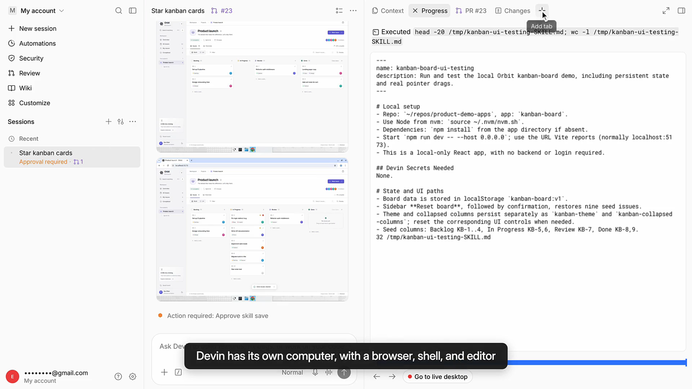
- At rest
- Session title, then one orange line
Approval required · ⎇1(PR count). - On hover / open
- "Action required: Approve skill save" banner sits above the composer in the session.
- Quieting
- The only color in the sidebar is the ask; everything else is gray.
- Density (~800px)
- ~20 rows (inferred: the demo has one session).
- Falls short
- Demo shows one session; no public view of how it scales.
Claude Code desktop

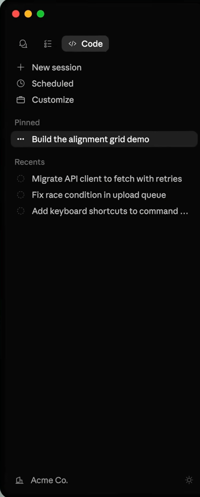

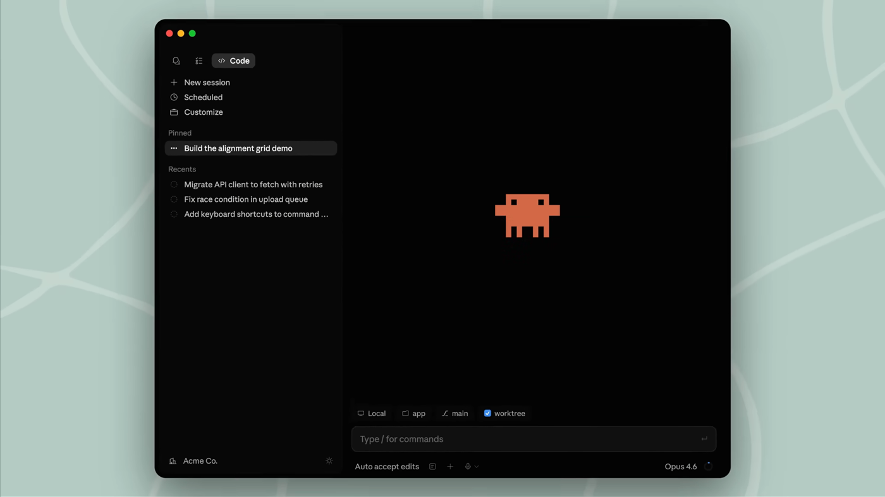
- At rest
- Pinned and Recents, one line each, no time, a small glyph for the running one.
- On hover / open
- Tasks, diff, terminal and plan open as panes on the right.
- Quieting
- No status on idle rows at all.
- Density (~800px)
- ~28 rows.
- Falls short
- The public frame shows no needs-you state; whatever the sidebar does there is not visible in the launch video.
Google Jules

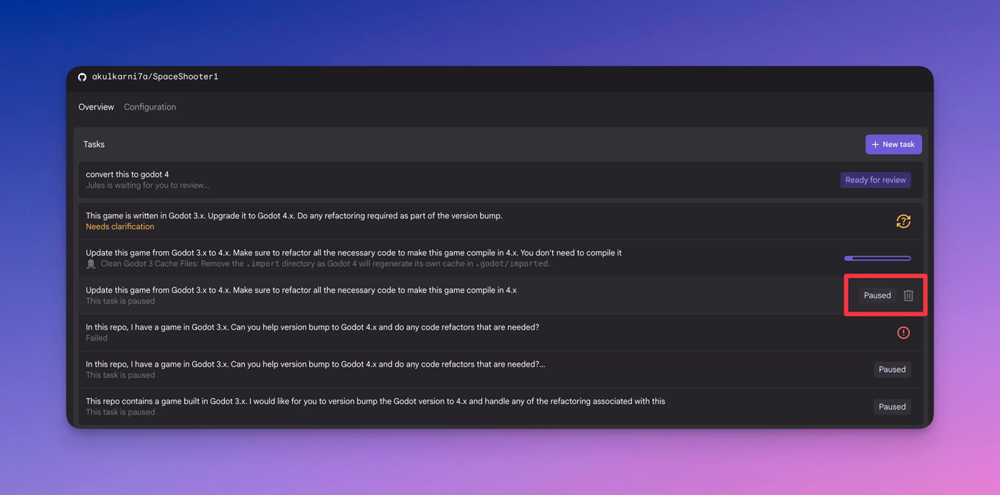

- At rest
- Full-width task rows: prompt text, then a one-line status (
Jules is waiting for you to review, orangeNeeds clarification,This task is paused,Failed). Right side: a pill (Ready for review,Paused), a progress bar, or a red ! icon. - On hover / open
- Delete/pause appear on hover (the red box in the doc).
- Quieting
- Paused and failed rows stay in the list; no grouping.
- Density (~800px)
- ~10 rows.
- Falls short
- Unsorted: the one that needs clarification sits between running ones.
GitHub Copilot coding agent

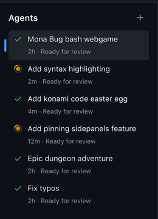

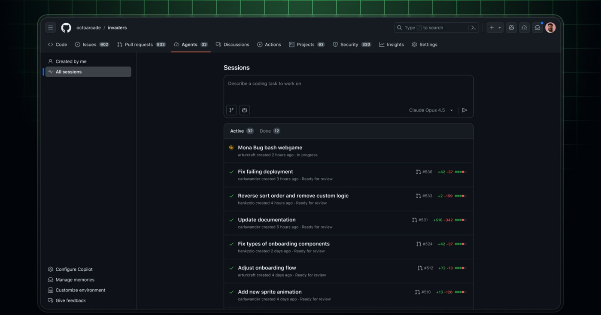


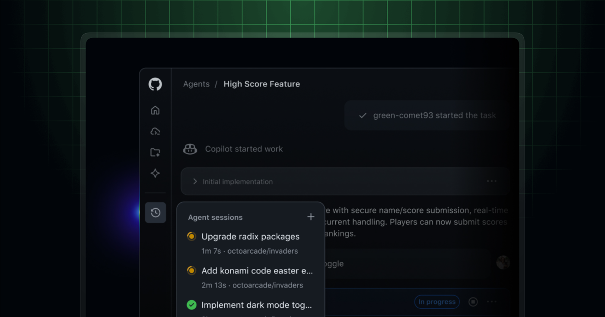
- At rest
- Two lines: status icon (green check / amber spinner) + title, then
2h · Ready for review. Sessions list adds PR number and a +/- diffstat bar on the right. - On hover / open
- Log, diff and "View pull request" open in the main pane.
- Quieting
- Sessions split into
Active 32/Done 12tabs. - Density (~800px)
- ~14 rows.
- Falls short
- Everything finished says "Ready for review"; nothing ranks them.
Sculptor (Imbue)

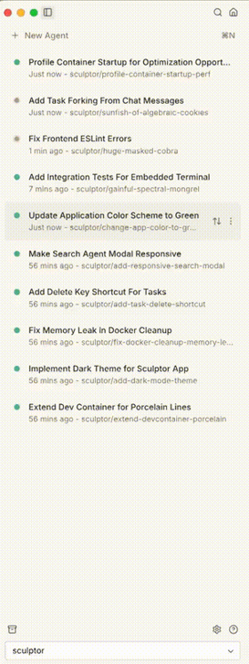


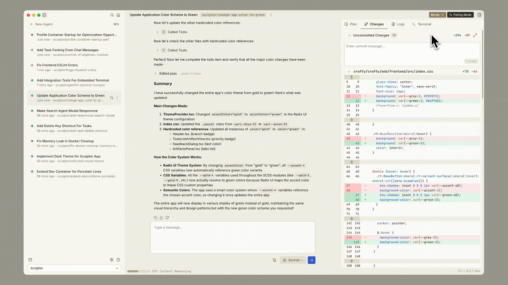
- At rest
- Green dot + title, then
56 mins ago · sculptor/branch-name. - On hover / open
- Merge / Pairing Mode buttons and the Changes diff on the right.
- Quieting
- Every row looks the same; dot color is the only state.
- Density (~800px)
- ~22 rows.
- Falls short
- Uniform rows; a dot alone carries all of the state.
Amp

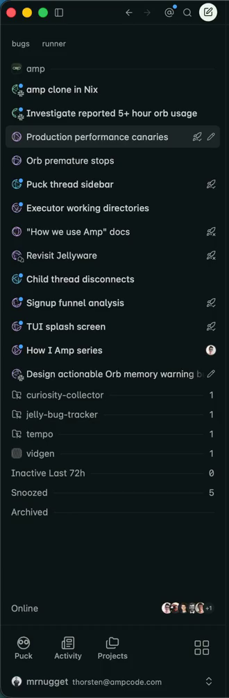

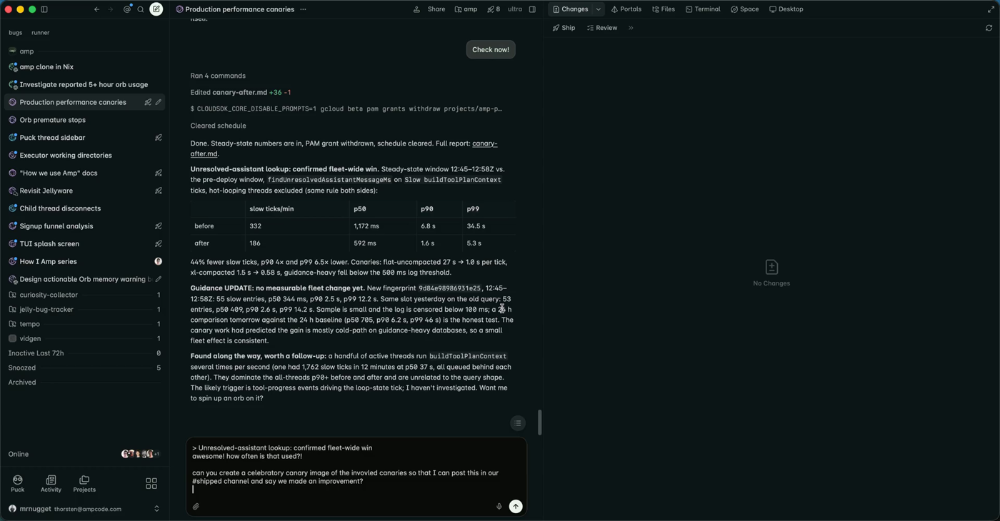
- At rest
- One line per thread with an agent avatar; small right-side glyphs (pin, edit, a ! badge). Projects as one-line rows with counts.
- On hover / open
- Actions on hover (inferred from the glyphs).
- Quieting
- Bottom buckets:
Inactive Last 72h 0,Snoozed 5,Archived— old and snoozed work becomes one counted line. - Density (~800px)
- ~30 rows.
- Falls short
- Small, low-contrast glyphs; hard to see which thread needs you at a glance.
Factory (desktop)

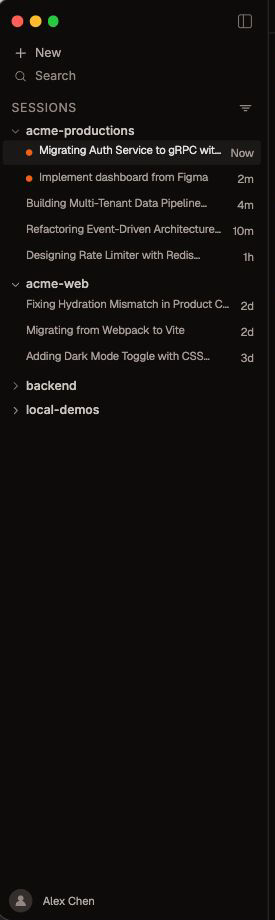

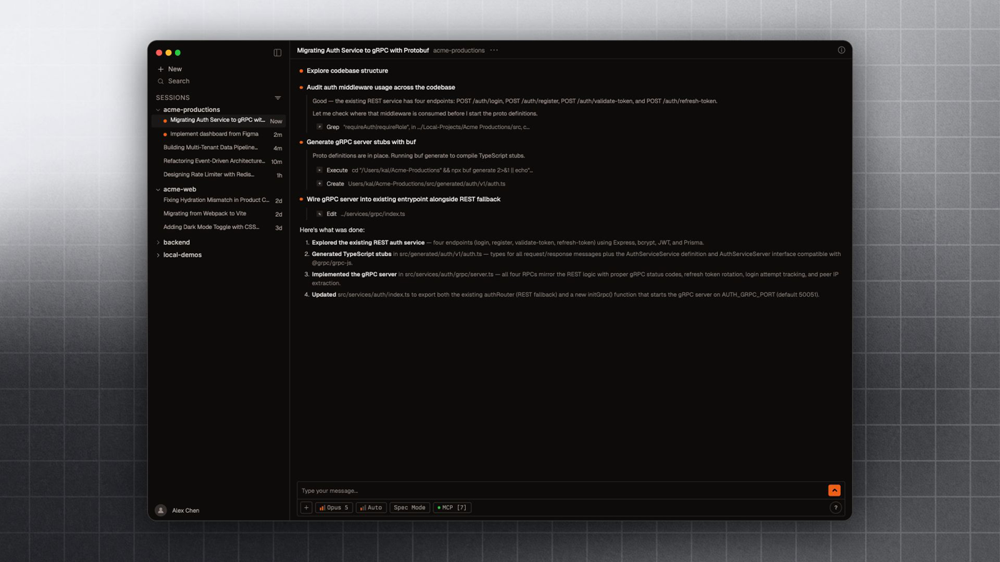
- At rest
- SESSIONS grouped by project (collapsible). One line: orange dot for live work + title + age (
Now,2m,1h). - On hover / open
- Plan steps and diff in the session.
- Quieting
- Collapsed projects (backend, local-demos) hide their rows entirely.
- Density (~800px)
- ~30 rows.
- Falls short
- Dot means "active", not "needs you".
Zed agent panel
No public visual of the thread-history list; zed.dev/agentic only shows the review panel. Skipped.
Inboxes and triage
Linear Inbox

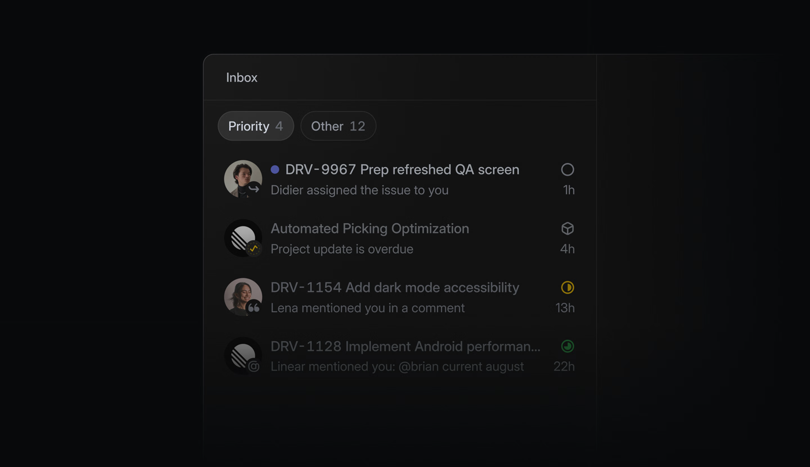
- At rest
- Avatar with a small action badge, title (blue dot if unread), then
Didier assigned the issue to you; status icon + age on the right. - On hover / open
- Snooze/delete etc. on hover and keyboard (docs).
- Quieting
- Read rows fade in steps;
Priority 4/Other 12tabs keep low-value notifications out of the first view. - Density (~800px)
- ~12 rows.
- Falls short
- Avatar + badge + status icon is three glyphs per row; heavy at 280px.
GitHub notifications

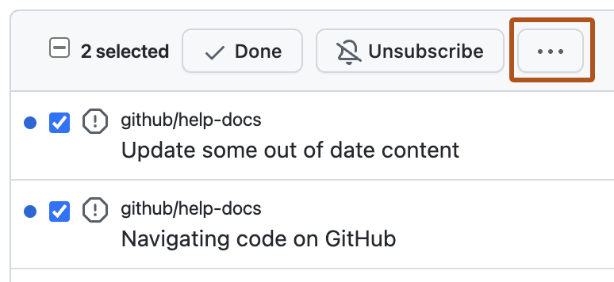


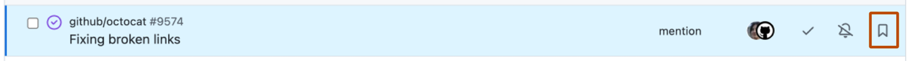

- At rest
- Repo + number, title, type icon; a reason label (
mention) on the right. - On hover / open
- Hover shows Done ✓, Unsubscribe, Save. Checkbox selects for bulk
Done. - Quieting
- Done removes it;
is:donekeeps an audit trail. - Density (~800px)
- ~16 rows.
- Falls short
- Hover-only actions; nothing works on touch without opening.
Superhuman

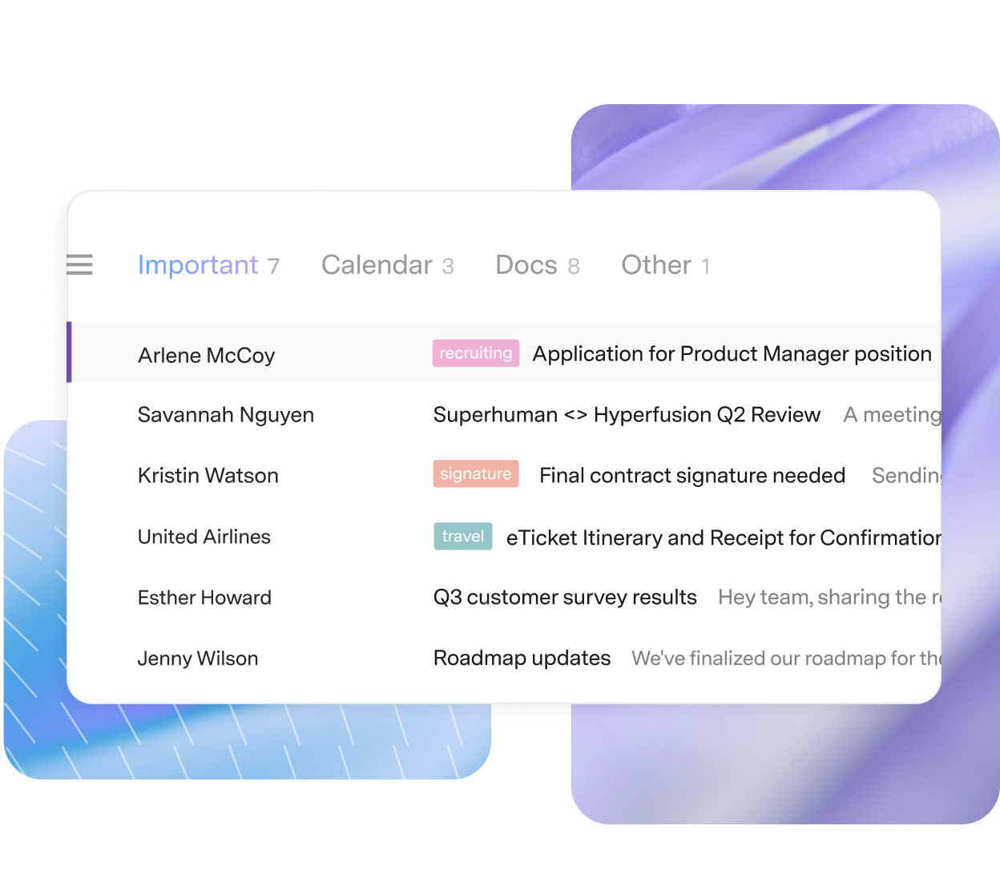
- At rest
- One line: sender | colored label chip | subject + gray preview. Selected row has a left accent bar.
- On hover / open
- Everything else via keyboard (E = done).
- Quieting
- Split Inbox tabs with counts:
Important 7 · Calendar 3 · Docs 8 · Other 1. - Density (~800px)
- ~20 rows.
- Falls short
- One-line row assumes a wide window; at 280px the preview disappears.
HEY

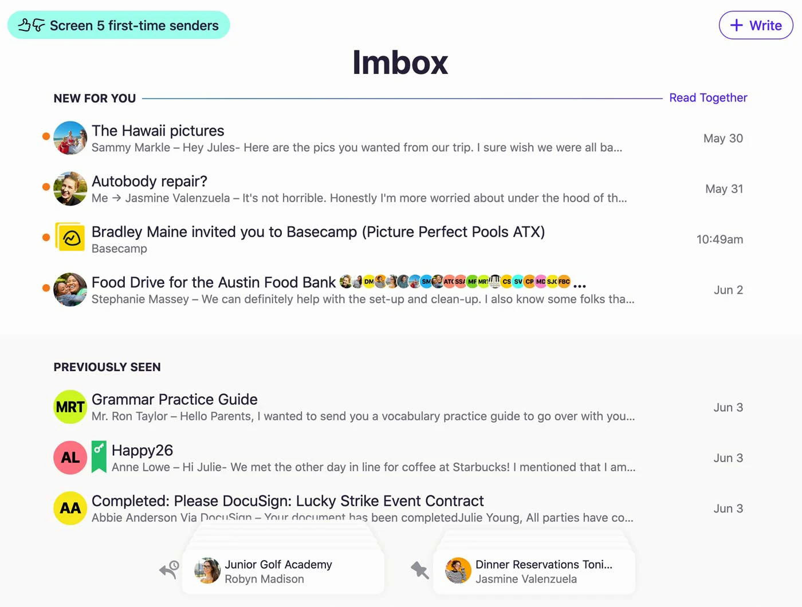


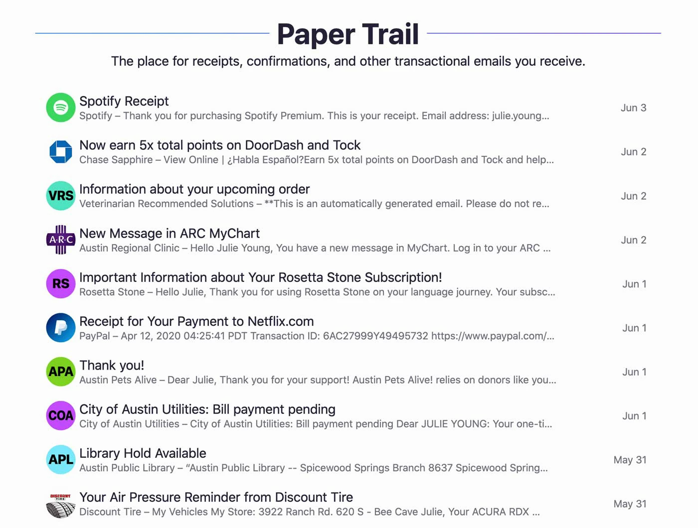


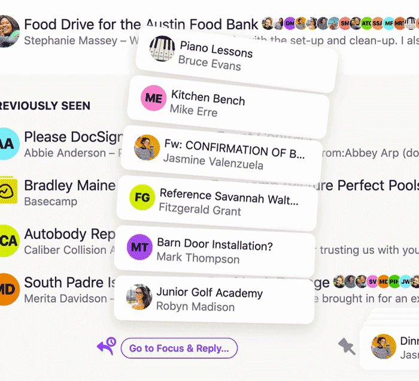

- At rest
- Imbox:
NEW FOR YOU(orange dot rows on white) abovePREVIOUSLY SEEN(on gray). Paper Trail is the same row with no dots. - On hover / open
- Reply Later and Set Aside are card piles pinned at the bottom; tapping fans them out into "Focus & Reply".
- Quieting
- Receipts and newsletters go to separate places (Paper Trail, The Feed) and never hit the Imbox.
- Density (~800px)
- ~10 rows.
- Falls short
- Big rows, built for email; wastes space at 280px.
Front

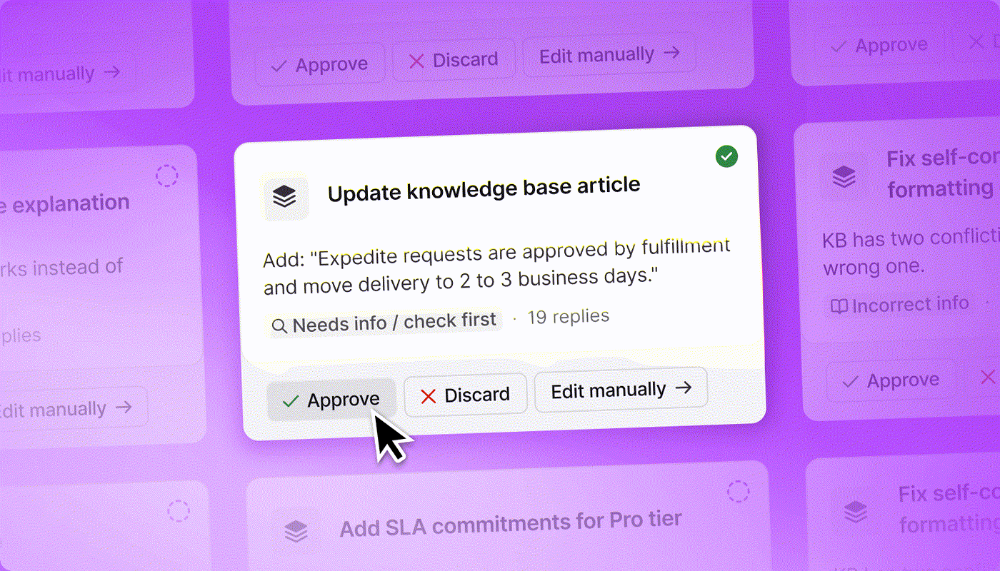
- At rest
- AI-suggested actions as cards: title, quoted proposal,
Needs info / check first · 19 replies, thenApprove / Discard / Edit manually. - On hover / open
- Buttons are always visible on the card.
- Quieting
- Done cards fade behind with a check.
- Density (~800px)
- ~3 cards.
- Falls short
- Cards are tall; only the top item fits a sidebar.
Missive

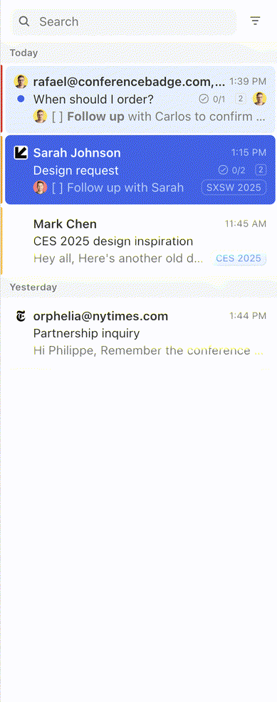


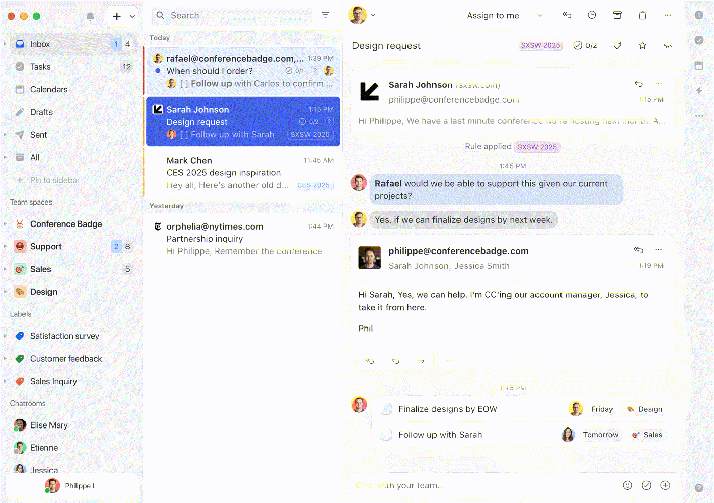
- At rest
- Sender + time, subject, a third line with the open task (
[ ] Follow up with Sarah) and a label; checklist progress0/2. - On hover / open
- Conversation + team chat in the reading pane.
- Quieting
- Colored left border per team;
Today/Yesterdayheaders. - Density (~800px)
- ~10 rows.
- Falls short
- Four kinds of metadata per row; busy.
Gmail, Slack Activity, Notion inbox
No usable public image captured: Gmail not attempted for lack of time; Slack's help-center images did not load headless; Notion's inbox help page only has an illustration.
Calm lists
Things 3

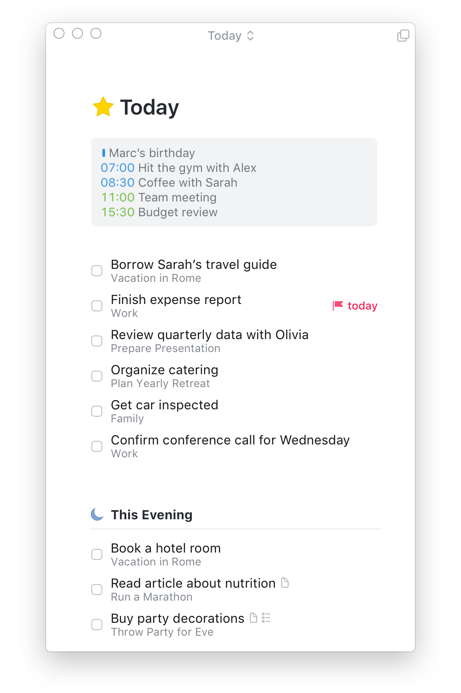


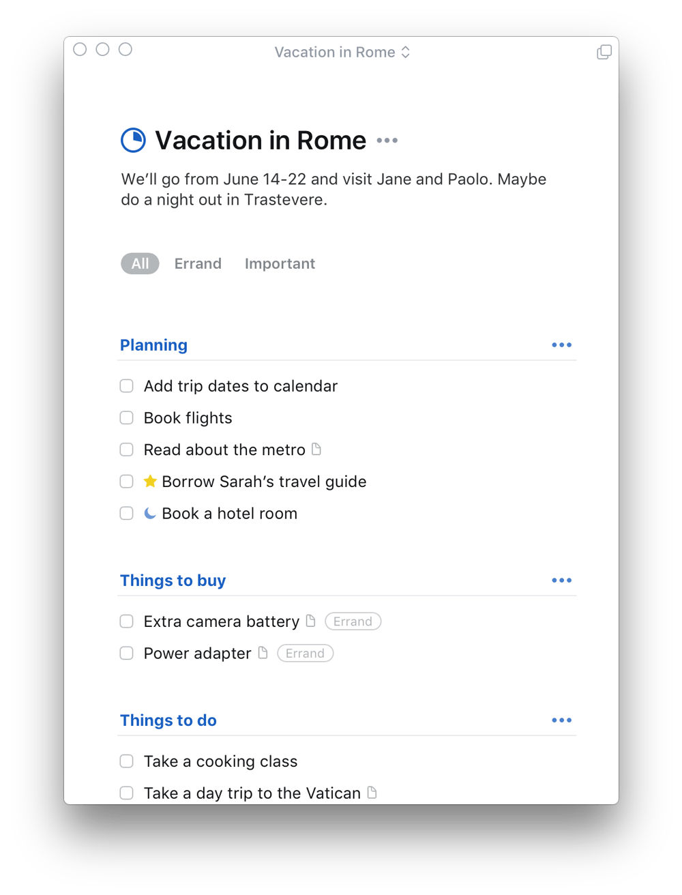

- At rest
- Checkbox + title; project in tiny gray below; one red
todayflag where it matters. - On hover / open
- Notes/checklists open in place.
- Quieting
This Eveningsection lowers the rest of the day without hiding it.- Density (~800px)
- ~16 rows.
- Falls short
- No status beyond done/not done.
Raycast

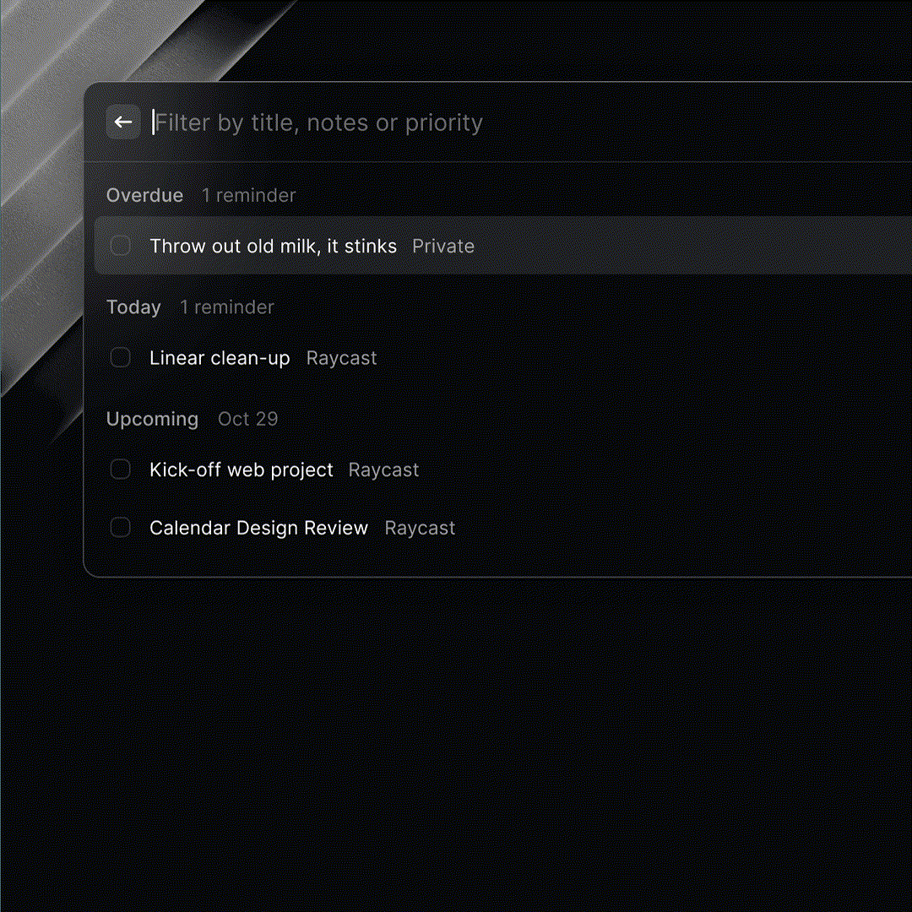
- At rest
- Section header + count (
Overdue 1 reminder,Today,Upcoming Oct 29); one-line rows with a muted accessory on the right. - On hover / open
- Action panel on ⌘K.
- Quieting
- Headers do the ranking; rows are identical.
- Density (~800px)
- ~24 rows.
- Falls short
- Keyboard-first; no touch affordance.
Arc, Height
Arc: arc.net is now a farewell page and its help center sits behind a Cloudflare check headless. Height: shut down, height.app unreachable. Skipped.
Directions for a 280px Inbox
A. PaperQuietest
asked you a question, finished · +120 −8 · tests ✓). Time right. No chips, no icons. Running work is one gray line at the very bottom: 4 running. Verify lives in the opened thread.B. Ask chipsMedium
Needs your answer 2, Broken 1, Ready to verify 5, FYI 3). Row = 2 lines: project · age, then a small chip (red Blocked, amber Approve plan, green Verify) + title. Only tiers 1–2 get saturated color; Verify chips are outlined, FYI rows have none.C. Count tabsDense
Needs you 3 · Verify 5 · FYI 2 (current one bold). One-line 28px rows below: status glyph + title + age; diffstat (+120 −8) right-aligned on Verify rows. ~25 rows in 800px. Running = count in the strip (· 4 running), never rows.D. ShelvesQuiet
Running 4 ›, Snoozed 2 ›, Verified today 6 › as 28px muted rows that expand in place. The queue scrolls; the shelves never do.E. Top cardLoudest
+120 −8 · 3 files, checks ✓, 2 children done) and buttons Verify / Later / Open. Below it, the rest as one-line rows, slightly stacked. Verify advances to the next card; Inbox zero when empty.F. Just dots (control)Quietest
answer, failed, verify). Nothing else changes. The cheapest build and the baseline the others must beat.